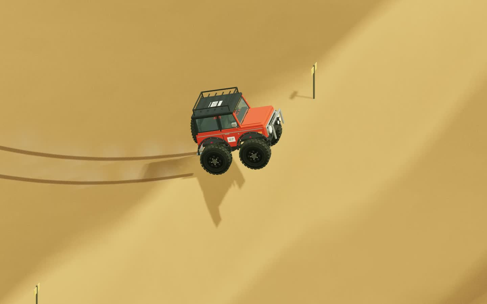
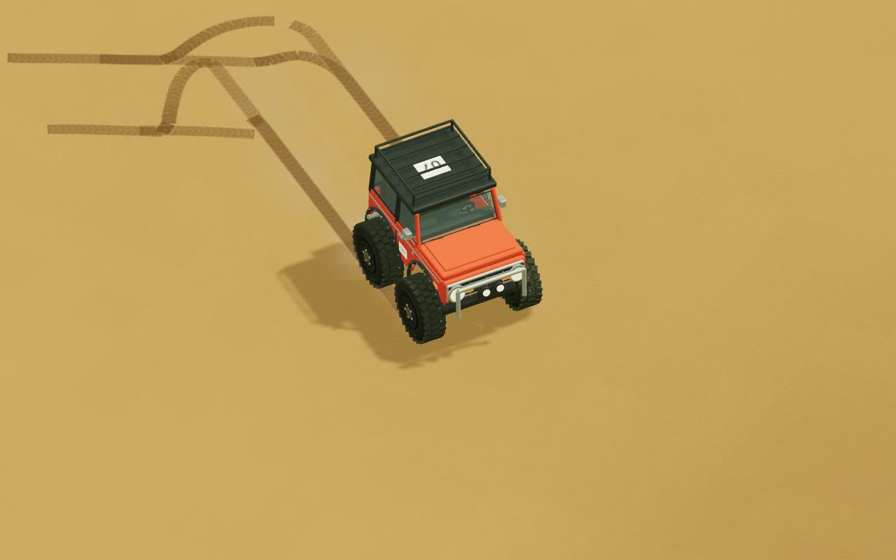
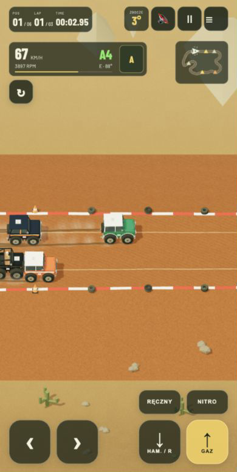

Wyścig sześciu aut
Dustbowl, rywale AI, zakręty i kurz. Pokazowy przejazd z ukrytym HUD-em · 15 s · bez dźwięku.
Sześć Bronco w ciasnej grupie, lot nad wydmą i własny ślad na piasku. Aktualne kadry i krótkie nagrania z działającej gry.
Dustbowl, rywale AI, zakręty i kurz. Pokazowy przejazd z ukrytym HUD-em · 15 s · bez dźwięku.
Rozbieg z nitro, lekki skręt na wybiciu, lot i lądowanie. Free Ride · 10 s · bez dźwięku.

Kadr z prawdziwego skoku: koła nad piaskiem, cień poniżej i koleiny na zboczu.

Ślady kół podążają za ruchem auta także poza torem, podczas swobodnej jazdy po pustyni.
Mobilny HUD zostawia środek ekranu dla auta i trasy. Skręt po lewej, pedały po prawej; automat, minimapa, nachylenie zbocza i dźwięk przy górnej krawędzi.
Portretowy układ telefonu w emulacji przeglądarki, 390 × 777. To zrzut działającej gry, nie makieta ani zdjęcie fizycznego urządzenia.
Spróbuj na swoim telefonie ↗